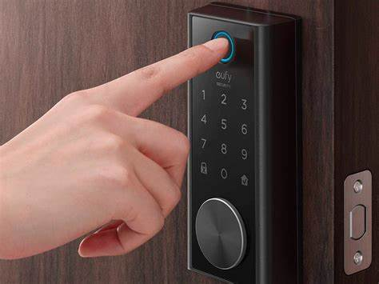
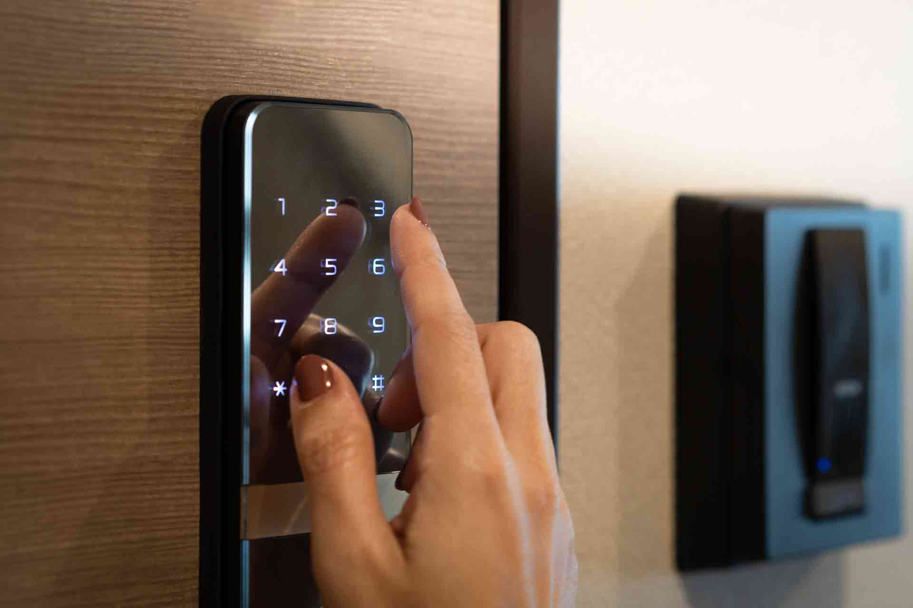
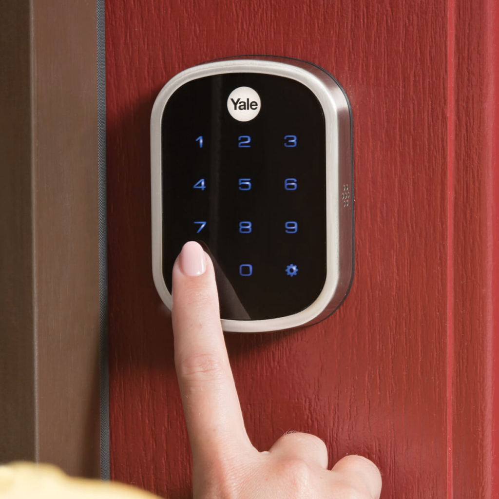
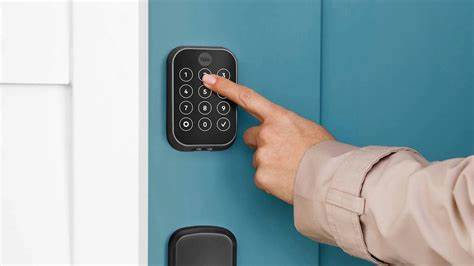
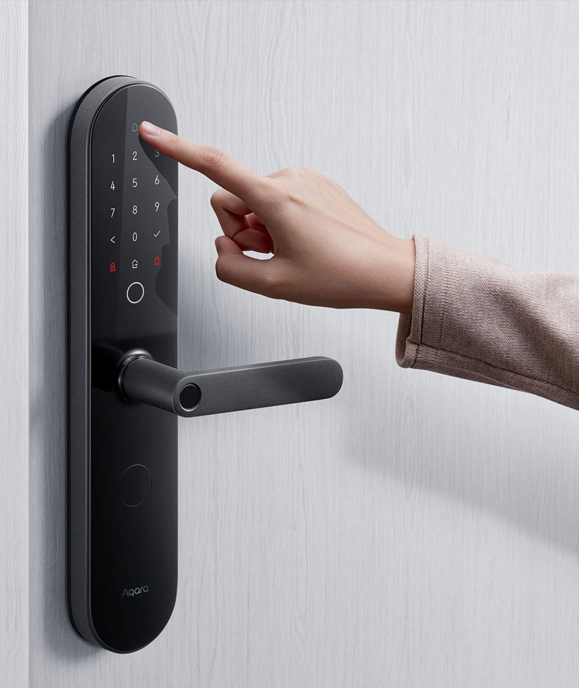
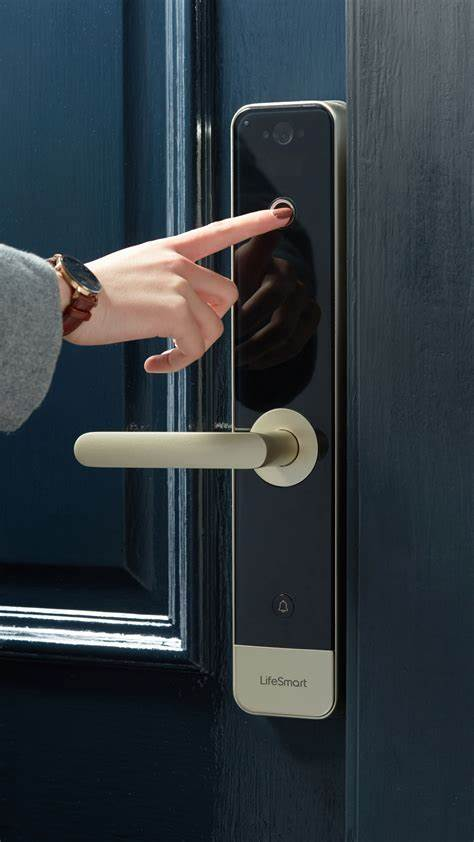

Apa itu SMARTLOCK?
Smart Lock adalah sistem penguncian pintu yang menggunakan teknologi digital untuk menggantikan kunci fisik. Sebagai pengganti kunci konvensional, Smart Lock memungkinkan Pins membuka pintu dengan bantuan perangkat pintar seperti smartphone atau kunci elektronik. Ini adalah langkah revolusioner dalam keamanan pintu dan menghadirkan berbagai manfaat.
Cara Kerja Smart Lock
Smart Lock bekerja dengan mengintegrasikan perangkat elektronik dengan pintu Pins. Ini dapat mencakup penggunaan sensor sidik jari, pengenalan suara, atau koneksi Bluetooth dengan smartphone Pins.
Begitu Pins diidentifikasi sebagai pemilik yang sah, Smart Lock akan membuka pintu secara otomatis atau meminta tindakan tambahan, seperti memasukkan kode PIN atau menekan tombol pada aplikasi ponsel Pins.
Fungsi Smart Lock
Smart Lock memiliki berbagai fungsi yang dapat meningkatkan keamanan dan kenyamanan akses pintu Pins. Berikut adalah beberapa fungsi utama dari Smart Lock:
1. Keamanan Tingkat Tinggi
Smart Lock dilengkapi dengan teknologi keamanan tingkat tinggi yang sulit untuk dipecahkan oleh pencuri. Ini termasuk sensor biometrik dan enkripsi data yang kuat, sehingga memastikan bahwa hanya orang yang sah yang dapat membuka pintu.
2. Kepintaran Artificial
Beberapa Smart Lock dilengkapi dengan kecerdasan buatan yang dapat mempelajari kebiasaan Pins. Mereka dapat mengoptimalkan penguncian pintu untuk kenyamanan Pins, seperti membuka pintu secara otomatis ketika Pins tiba di depan pintu.
3. Kemudahan Akses
Pins dapat mengontrol Smart Lock dari jarak jauh melalui aplikasi ponsel Pins. Ini memungkinkan Pins memberikan akses kepada tamu atau anggota keluarga tanpa perlu memberikan kunci fisik. Pins bahkan dapat memberikan hak akses terbatas atau waktu terbatas kepada orang lain.
4. Rekam Jejak Akses
Smart Lock sering kali memiliki fitur untuk merekam jejak siapa yang membuka pintu dan kapan. Ini dapat meningkatkan keamanan dan memungkinkan Pins untuk melacak siapa yang masuk atau keluar dari rumah Pins, memberikan rasa aman tambahan.
Dengan berbagai fungsi ini, Smart Lock dapat memberikan manfaat yang signifikan dalam hal keamanan dan kenyamanan akses pintu rumah Pins.
Kelebihan Smart Lock
Sekarang, mari kita tinjau beberapa kelebihan utama yang dimiliki oleh Smart Lock:
1. Keamanan Tingkat Tinggi
Smart Lock dilengkapi dengan teknologi keamanan tingkat tinggi yang sulit untuk dipecahkan oleh pencuri. Ini termasuk sensor biometrik dan enkripsi data yang kuat.
2. Kepintaran Artificial
Beberapa Smart Lock dilengkapi dengan kecerdasan buatan yang dapat mempelajari kebiasaan Pins dan mengoptimalkan penguncian pintu untuk kenyamanan Pins.
3. Kemudahan Akses
Pins dapat mengontrol Smart Lock dari jarak jauh melalui aplikasi ponsel. Ini memungkinkan Pins memberikan akses kepada tamu atau anggota keluarga tanpa perlu memberikan kunci fisik.
4. Rekam Jejak Akses
Smart Lock sering kali memiliki fitur untuk merekam jejak siapa yang membuka pintu dan kapan. Ini dapat meningkatkan keamanan dan memungkinkan Pins untuk melacak siapa yang masuk ke rumah Pins.
Kekurangan Smart Lock
Namun, seperti teknologi lainnya, Smart Lock juga memiliki beberapa kekurangan yang perlu Pins pertimbangkan:
1. Ketergantungan pada Teknologi
Smart Lock sangat bergantung pada teknologi. Jika baterai habis atau ada gangguan teknis, Pins mungkin tidak dapat membuka pintu Pins.
2. Harga
Smart Lock cenderung lebih mahal daripada kunci konvensional. Ini bisa menjadi investasi yang signifikan.
3. Keamanan Siber
Dalam era di mana keamanan siber menjadi masalah besar, Smart Lock mungkin rentan terhadap peretasan jika tidak diatur dengan benar.
4. Kompatibilitas
Pins perlu memastikan bahwa Smart Lock Pins kompatibel dengan sistem pintu Pins saat ini. Pemasangan dapat menjadi sulit jika pintu Pins tidak mendukung teknologi ini.
Kesimpulan
Smart Lock adalah inovasi yang menarik dalam keamanan pintu dan akses rumah. Meskipun memiliki beberapa kekurangan, kelebihannya jelas berbicara tentang kemudahan dan keamanan yang ditawarkannya.
Bagi mereka yang mencari cara yang lebih modern dan nyaman untuk mengunci dan membuka pintu, Smart Lock bisa menjadi pilihan yang menarik. Namun, pastikan Pins mempertimbangkan semua faktor sebelum mengambil keputusan akhir.
Dengan Smart Lock, Pins dapat mengamankan rumah Pins dengan cara yang lebih cerdas dan efisien. Terlepas dari kekurangannya, teknologi ini menjanjikan revolusi dalam cara kita memandang keamanan pintu rumah.